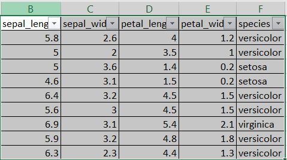

Keyboard shortcuts:
N/SpaceNext Slide
PPrevious Slide
OSlides Overview
ctrl+left clickZoom Element
If you want print version => add '
?print-pdf' at the end of slides URL (remove '#' fragment) and then print.
Like: https://ProgressBG-ChatGPT_and_ML-course.github.io/...CourseIntro.html?print-pdf
Introduction to Data Science and ML Tools
Created for
Iva E. Popova, 2023-2026,

Framing the concepts
AI vs ML vs DL vs DS

DS vs ML vs AI
| Concept | Role |
|---|---|
| AI | The goal: build intelligent systems |
| ML | The method: let machines learn from data |
| Data Science | The process: analyze data to extract meaning and build models |
Introduction to Data Science
Introduction to Data Science
What is Data Science?
- Data Science is a multidisciplinary field that uses statistics, mathematics, programming, ML techniques, and domain knowledge to analyze data and derive actionable insights.
- The goal of Data Science is to understand data, find patterns, and support decision-making.
- The data used for analysis can come from many different sources and presented in various formats.
Data Science Fields

What is Dataset?
What is Dataset?
What is data?
- Data is just a value which is observed or measured without being interpreted or analyzed.
- Information is data that is interpreted and has some meaningful inference for the user.
- Knowlege is combination of inferred information, experiences, learning, and insights

What is a dataset?
{kind=link}
- Datasets are collections of data
- They can consist of various types of data such as numerical, categorical, images, text, and more.
- A dataset typically covers one topic at a time.
- In statistics, datasets usually come from actual observations and each row corresponds to one observation.
- Datasets play a crucial role in machine learning as they directly influence the performance and effectiveness of algorithms.
- The quality, relevance, and size of a dataset can significantly affect the outcome of machine learning projects.
Types of Datasets used in ML
- Supervised Learning Datasets: These datasets are labeled, meaning each training instance is paired with an answer (label).
- Example: A dataset for a spam detection system might include emails along with labels indicating whether each email is 'spam' or 'not spam'.
- Unsupervised Learning Datasets: These datasets are not labeled, and the model tries to learn the structure or patterns from the data itself.
- Example: A collection of articles can be used to find natural clusters of similar articles without predefined categories.
- Reinforcement Learning Datasets: These datasets are generated through interactions with an environment, used to train models that make decisions sequentially.
- Example: A dataset containing the state of a game at each step, the action taken by the player, and the subsequent reward received.
Dataset Concepts

- The datasets used in Machine Learning are typically organized in tables.
- Each row (record) represent an observation (also called example, sample, data point, data object) about some attributes (also called features, variables).
- The data itself can be of various types (numerical, categorical and so on).
Labels and Targets
- Labels (or Targets) are the outputs or responses that a machine learning model is trained to predict.
- In a supervised learning task, each example in the dataset is paired with a label.
- For instance, in a spam detection model, emails are labeled as 'spam' or 'not spam'.
Data Science and ML Tools Overview
Programming Languages
Programming Languages for Data Science & ML
- Python - The dominant language for ML/AI, known for its simplicity, vast library ecosystem (NumPy, Pandas, TensorFlow, PyTorch), and rapid development capabilities.
- cons: Slower execution speed compared to compiled languages (overcome by optimized libraries like NumPy).
- R Programming Language - A free software environment primarily used for statistical computing, data visualization, and academic research. Excellent for in-depth statistical analysis.
- cons: Steeper learning curve for general programming; less integrated for production/deployment of complex ML systems.
- Julia - A high-level, high-performance language designed specifically for numerical and scientific computing. Aims to solve the "two-language problem" (easy to write like Python, fast like C).
- cons: Smaller community and ecosystem compared to Python; still maturing.
Python's pros and cons
- Pros:
- Clean syntax - easy to write and read
- Matured Multipurpose Programming Language
- Vibrant community - scientists, programmers
- Enormous ecosystem of libraries available
- Cons:
- Slow speed and not memory efficient. But this problem is overcome by libraries, like numpy, pandas, etc.
- "Dependency Conflicts" when using many libraries. This problem is overcome by virtual environments and dependency management tools.
Jupyter Notebook
Jupyter Notebook: The Scientist's Lab
- Jupyter Notebook is an open-source, web-based interactive environment that mixes code, text, graphics, and formulas. It allows you to execute code step-by-step, which is ideal for experiments and data analysis.
- Key Features:
- Interactive: Run code in chunks (cells) and see results immediately.
- Exploratory: Perfect for data cleaning, transformation, and visualization.
- Shareable: Export to HTML, PDF, or share via GitHub and more.
- Reference: jupyter.org
Jupyter Notebook Example
JupyterLab
- JupyterLab is the Next-Generation IDE for Project Jupyter.
- Integrated Environment: Manage notebooks, terminals, text files, and data in a single tabbed interface.
- Flexible Layout: Drag-and-drop to arrange multiple documents side-by-side (Split View).
- Extensible: Modular design allows for rich extensions (Git, Table of Contents, Debuggers).
- File Support: Native viewers for CSV, JSON, Markdown, PDF, and images.
- Reference: JupyterLab Documentation
Working with Jupyter Lab Locally
- 1. Create Virtual Environment
- 2. Install JupyterLab
- 3. Start the Server
- VSCode Support
- VSCode supports writing and running Jupyter Notebooks natively. It detects your virtual environment and provides a rich interface.
# Create
python -m venv .venv
# Activate (Windows)
.venv\Scripts\activate
# Activate (Linux/Mac)
source .venv/bin/activate
pip install jupyterlab
jupyter lab
Google Colab (Colaboratory)
- Hosted Jupyter Notebook service by Google ("Jupyter in the Cloud").
- Zero Configuration: Runs entirely in the browser. No installation required.
- Free Compute Resources: Access to powerful GPUs (Tesla T4) and TPUs. Critical for Deep Learning.
- Google Drive Integration: Seamlessly save notebooks and load data from Drive.
- Collaboration: Share, comment, and edit in real-time (like Google Docs).
- Pre-installed Libraries: Comes with most Data Science libraries (Pandas, NumPy, TensorFlow, PyTorch) pre-installed.
- Reference: colab.research.google.com
Local vs Cloud Jupyter
- Local JupyterLab:
- Pros: You have full control over the environment, install the necessary packages, and work with Sensitive Data offline. This is the preferred method for corporate development.
- Cons: Requires setup and maintenance, limited by local hardware.
- Google Colab:
- Pros: No setup, free access to GPUs/TPUs, easy sharing and collaboration.
- Cons: Dependent on internet, limited session time, less control over environment.
NumPy: The fundamental package for scientific computing with Python
NumPy
- NumPy is the fundamental package for scientific computing with Python.
- It contains among other things:
- a powerful N-dimensional array object
- sophisticated (broadcasting) functions
- tools for integrating C/C++ and Fortran code
- useful linear algebra, Fourier transform, and random number capabilities
- Reference: numpy.org
NumPy Example
import numpy as np
# Create a 2D array (matrix)
matrix = np.array([[1, 2, 3], [4, 5, 6]])
print("Original Matrix:")
print(matrix)
# Transpose matrix
print("Transposed Matrix:")
print(matrix.T)
# Element-wise multiplication
result = matrix * 3
print("Matrix Multiplication Result:")
print(result)
Pandas: Python Data Analysis Library
Pandas: Python Data Analysis Library
- The backbone of Data Science in Python. Built on top of NumPy.
- Core Data Structures:
- Series: 1D labeled array (like a column in a spreadsheet).
- DataFrame: 2D labeled data structure (like a SQL table or Excel sheet).
- Key Capabilities:
- Data Loading: Read/Write CSV, Excel, SQL, JSON, Parquet, etc.
(
pd.read_csv()) - Data Cleaning: Handle missing data (
dropna(),fillna()), filter rows, rename columns. - Data Analysis: Grouping (
groupby()), aggregation, pivot tables, statistical summaries (describe()). - Reference: pandas.pydata.org
Pandas DataFrame Example
import pandas as pd
# Create a DataFrame
data = {
'Name': ['Alice', 'Bob', 'Charlie'],
'Age': [25, 30, 35],
'City': ['New York', 'London', 'Paris']
}
df = pd.DataFrame(data)
# View first few rows
print(df.head())
# Calculate mean age
print(df['Age'].mean())
Data Visualization & ML Libraries
Matplotlib
- A Python 2D plotting library
- Produces publication quality figures in a variety of formats
- Matplotlib tries to make easy things easy and hard things possible
- Can generate plots, histograms, power spectra, bar charts, errorcharts, scatterplots, etc., with just a few lines of code
- Reference: matplotlib.org
seaborn
- Seaborn is a sofisticated Python data visualization library
- Based on matplotlib
- Closely integrated with pandas data structures
- Features: An introduction to seaborn
- Reference: seaborn.pydata.org
Machine Learning Frameworks
scikit-learn
- scikit-learn - Machine Learning in Python
- Simple and efficient tools for data mining and data analysis
- Accessible to everybody, and reusable in various contexts
- Built on NumPy, SciPy, and matplotlib
- Open source, commercially usable - BSD license
- Reference: scikit-learn.org
tensorflow
- TensorFlow is an end-to-end open source machine learning platform developed by Google.
- It is primarily used for Deep Learning (the engine behind technologies like ChatGPT and image recognition).
- It handles complex calculations using Tensors (multi-dimensional arrays, similar to NumPy but optimized for GPUs).
- It features Keras, an intuitive, high-level API that makes building neural networks much simpler for beginners.
- Supports easy deployment of models to the cloud, browsers (TensorFlow.js), or mobile devices.
- Reference: tensorflow.org
PyTorch
- PyTorch is an open-source machine learning framework developed by Meta (formerly Facebook).
- It is the primary competitor to TensorFlow, especially dominant in Deep Learning research and academic communities.
- Its core feature is its use of dynamic computation graphs, which allows for more flexible and intuitive coding for complex models.
- PyTorch is known for its "Pythonic" feel, making it easier for those already familiar with Python programming.
- Uses the TorchScript tool to transition models from research (flexible, dynamic) to production (stable, optimized).
- Reference: pytorch.org
These slides are based on
customised version of
framework